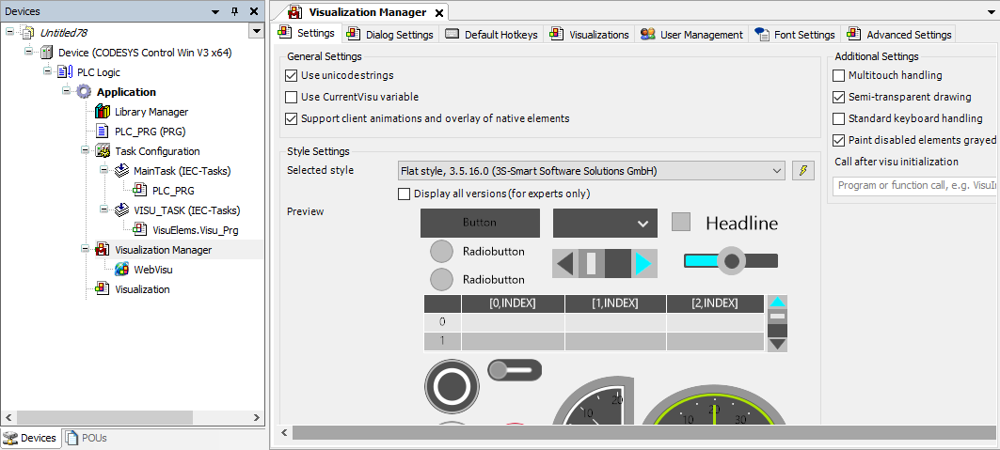
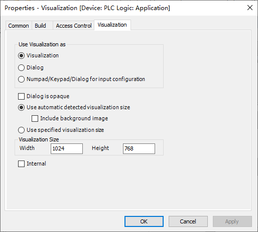
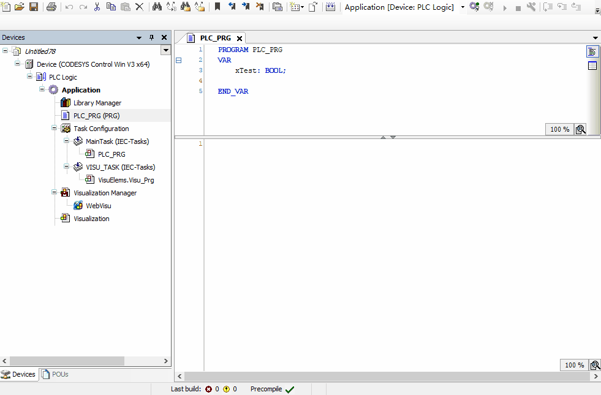
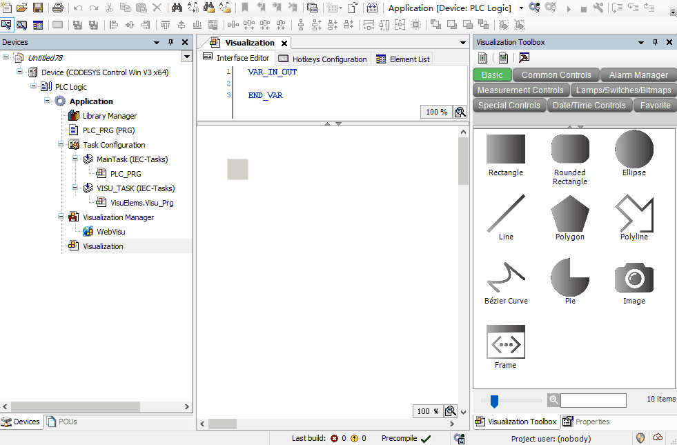
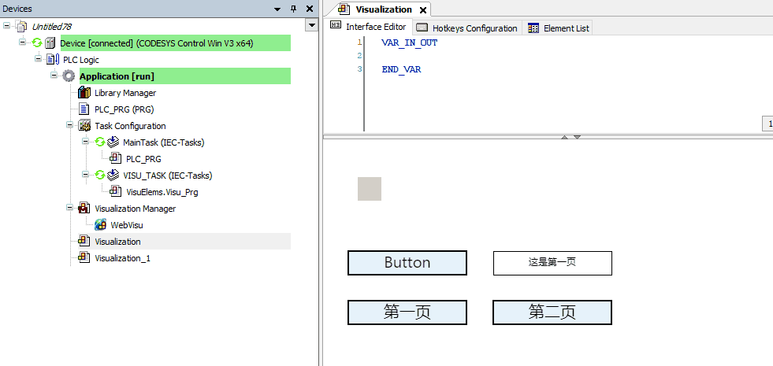
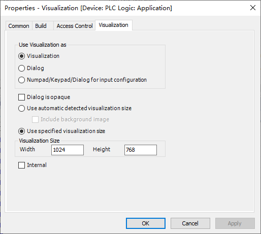
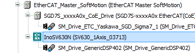
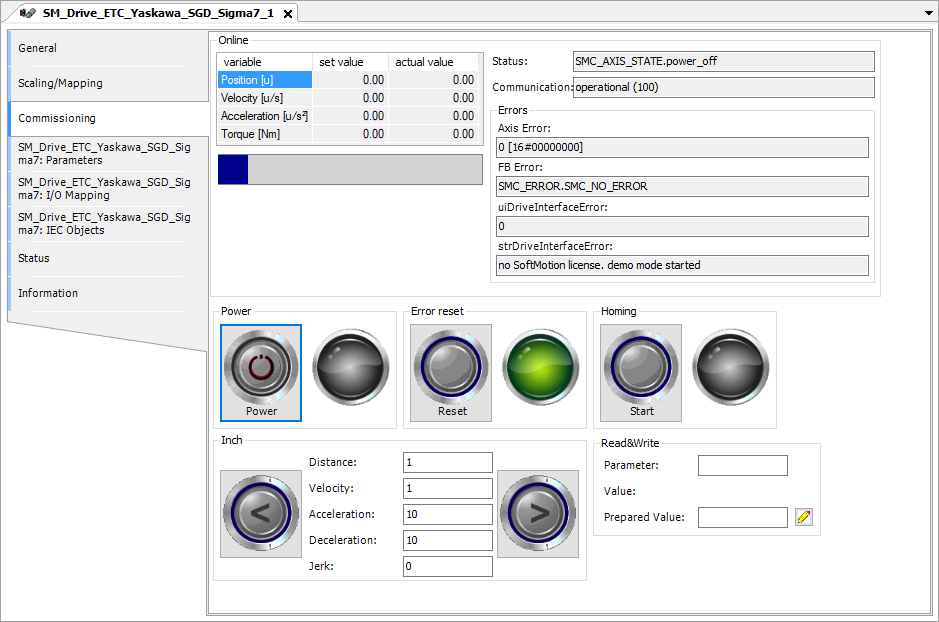

4 visu、softmotion、附加功能
4.1 Visu结构组成
Visuallization字面意思即可视化，可以理解为内置的组态屏。最常用的是WebVisu，可以通过浏览器本地访问或局域网内另一台PC远程访问。本地用chromium的kiosk模式打开即和TargetVisu效果一致，且配置更自由。故现在很少会用TargetVisu。
浏览器做visu的设置
推荐使用 ungoogled-chromium 作为Chrome的离线、免安装、去更新化方案。创建快捷方式并编辑属性中的目标栏。
若需要窗口模式，使用C:\ungoogled-chromium\chrome.exe --app=http://127.0.0.1:8080 --window-size=1040,808
若需要全屏模式，使用C:\ungoogled-chromium\chrome.exe --kiosk http://127.0.0.1:8080
在做Visu前，建议各位读者先有一个设计思路。一般情况下，我们推荐元素不要用太多的种类，颜色可以丰富一些并用浅色，字体应用黑体或仿宋，背景可以用浅色纯色或白色90%透明度叠加的背景图片。通常情况下，我们不建议使用官方的指示灯、切换开关、码表等元素，因为图标风格不一致会有设计上的割裂感。按钮、指示灯、文字和框架都可以用矩形来做。Style选择Default或Flat Style。一般不建议在一个界面中挤满元素，而是通过分页、分框架的形式构建界面。
我们可以在Application下添加Visualization页面，添加第一个visu时会自动添加Visulization Manager。添加visu时会有提示是否勾选VisuSymbols，这是系统内置的一些SVG图片库，可根据需求勾选。默认情况下visu不支持中文，下载后会出现乱码，可在Visualization Manager中勾选Use unicodestrings即可。

添加的Visu默认是一个Visualization，可以理解为一个页面。如果需要做对话框可以改变visu属性为dialog。在属性中也可以设置visu的页面大小，该大小为画布大小，还会在管理器里根据缩放选项缩放。
 
visu编辑界面右侧会有Visualization Toolbox（没有的话可以在View中选出来），将元素拖放到画布上即可添加。用的最多的是Basic中的矩形、图片和框架。在制作背景、图片按钮或选框时，我们还要在项目中插入ImagePool和TextPool，它们用于给图片或文本分配ID，即可在Visu中静态或动态引用。
4.2 基础元素
矩形：矩形（或圆角矩形）是最常用的元素，它们既可以作为指示灯，又可以作为按钮，还可以显示文字、信息，亦可以作为分隔线和下拉菜单选框使用。
当作为双色切换的指示灯时，编辑Colors下的Normal state和Alarm state下的Fill color，建议一个改为LightGray，另一个改为LightGreen。并将Apperance下的Line style改为Invisible（或Hollow）。再在Color variables的Toggle color关联变量即可。

当作为按钮时，可将边框改大以与文本区分，在Texts中输入文字作为按钮标识，并在Input configuration中关联动作。默认指示状态关联Tap/Toggle，可在Color variables的Toggle color中取消关联。

当作为数值显示时，根据文本内容可以用%s（文字）、%d（整数）、%.2f（小数）并在Text variable中关联变量，即可作为变量显示框。此外，还可以关联Text list并使用Dynamic texts制作中文动态指示。
当作为数值输入时，先创建一个数值显示，再在OnMouseClick中添加Write Variable即可，程序中可对输入内容二次校验及限制。
除了矩形外，常用的还有Image（图片），Frame（框架），Group Box（组合框），Slider（滑动按钮），Line（分割线）等。
背景图片
背景图片可以在visu空白处右键-Background中选择，这样选出来的背景图片不可以被鼠标选中，避免误操作。在用图片做背景时，建议图片尺寸和visu尺寸一致以避免缩放。
4.3 界面框架
我们可以用多个相同尺寸visu切换的方式来架构应用，这适用于较少的页面。添加按钮后，在OnMouseClick中选择Change Shown Visualization即可。

在制作十多个页面以上的visu时，按钮切换的方式就会显得复杂了，这时候我们可以用框架（Frame）甚至是多个框架组合来做复杂的界面。作为frame时，一般建议预先规划frame尺寸，并在各个frame的属性中使用特定尺寸的画布大小。需要切换Frame时，我们可以创建一个变量关联到Switch frame variable中，然后就可以在程序里控制展示的Frame。具体到按钮上，可以选Execute ST-Code，然后将变量增加、减小或设置固定值即可。
 
4.4 运动控制简介
运动控制（SoftMotion）是CODESYS的一大特色，SoftMotion通过库中的功能块计算每个周期轴应当处在的位置，并通过总线发送给驱动器以达到实时控制的目的，驱动器工作在同步位置模式（CSP）下。除了标准的SoftMotion外，CODESYS还支持SoftMotion Light，发送非实时的指令控制，驱动器工作在PP、PV等模式下。SoftMotion Light还可以通过OpenSML库或自己写逻辑实现，不需要授权，故实际应用较少。
运动控制的授权会在各个授权中标明是否含有，例如树莓派的标准授权中不含运动控制，若需要使用轴或轴组功能则需要额外购买授权。但其可以通过自定义轴结构体并手动映射变量规避，需要一定的编程能力。详细请看这里。
通常情况下，我们谈论的SoftMotion都是控制EtherCAT总线伺服。也有少量伺服跑在CanOpen模式，它们的通信模式是一致的，操作类似。我们先添加一个EtherCAT_Master_SoftMotion总线设备，在其下添加 SGD7S-xxxxA0x EtherCAT(CoE) SERVOPACK Rev8.06_SM（安川EtherCAT总线伺服），即自动加上了一个轴对象。此外，还有一部分驱动器设备名后不带_SM的不会自动加轴对象，要手动在设备上右键-添加SoftMotion CiA402 Axis，例如汇川SV630N伺服。但一般来说，自动加轴和手动加轴使用上是一致的。

Online Config模式
Online Config模式适用于教学或轴的试运行，只需要添加完设备，物理接线连接好即可。通过点击 按钮，会自动编译一套带有基础运动控制功能和VISU的程序下载并运行。完成后，轴对象中的Commissioning页可用于手动上使能、移动等基础操作，可用于调试和诊断。

4.5 轴与轴组
4.6 凸轮与插补
4.7 配方和文件功能
4.8 日期、大小端、特殊功能
日期
Codesys默认是从系统读取时间，系统依赖于RTC时钟。由于各厂家RTC时钟设置有差异，我们不去讨论设置时间，而是看看如何读取时间。需要在库管理器中添加SysTime和SysTypes2 Interfaces库。
VAR
udiUtcTime:UDINT;
Result:RTS_IEC_RESULT;
udiUtcTimeLocal:UDINT;
dtDateAndTime:DT;
sDateAndTime:STRING;
sDate:STRING;
sTime:STRING;
END_VAR
udiUtcTime := SysTimeRtcGet(Result);//获取时间
Result := SysTimeRtcConvertUtcToLocal(udiUtcTime, udiUtcTimeLocal);//转换为UTC时间
dtDateAndTime := UDINT_TO_DT(udiUtcTimeLocal);//将时间从udint转换为DT
sDateAndTime := DT_TO_STRING(dtDateAndTime);//将时间从DT转换为STRING，将自动补0
sDate := MID(sDateAndTime , 10 , 4);//获取当前日期，格式2001-01-01
sTime := RIGHT(sDateAndTime , 8);//获取当前时间，格式00:00:00
大小端
在和西门子或Modbus设备通讯时容易遇到大小端问题，一个32位的数据会拆分成4个byte，如果发送方是ABCD，则接收端可能是CDAB，这就是大小端问题。 大小端有很多种解法，例如创建数组关联每一位、创建联合体等，在这里我提出一个较简单的写法：
FUNCTION FUN_EC : DWORD
VAR_INPUT
dwInput:DWORD;
END_VAR
FUN_EC:=SHL(dwInput,16) OR SHR(dwInput,16);
该方法只适用于DWORD，如果您使用的变量是DINT或REAL，则外部还需要转换，例如：
aa := DWORD_TO_DINT(FUN_EC(bb));
cc := FUN_EC(DINT_TO_DWORD(dd));
关机
所有的带系统的PLC，如Linux、WES7、WIN10系统，都需要正常的关机流程或配备UPS模块。不带系统的或经过OEM厂商特殊优化的Linux除外。如果没有优化过系统断电，则需要手动关机。为了不破坏用户体验，一般会在界面上写一个按钮或关联UPS的输出变量来自动关机。
- Windows系统（ControlWin和ControlRTE一致）：在库管理器中添加
SysProcess和SysTypes2 Interfaces库，在程序中使用：
VAR
xShutdown: BOOL;
Result: RTS_IEC_RESULT;
END_VAR
IF xShutdown THEN
SysProcess.SysProcessExecuteCommand('shutdown -s -t 0', ADR(Result));
xShutdown := FALSE;
END_IF
- Linux系统：编辑配置文件，在
[SysProcess]下改为Command=AllowAll，在库管理器中添加SysProcess和SysTypes2 Interfaces库，在程序中：
VAR
xShutdown: BOOL;
Result: RTS_IEC_RESULT;
END_VAR
IF xShutdown THEN
SysProcess.SysProcessExecuteCommand('sudo shutdown now', ADR(Result));
xShutdown := FALSE;
END_IF
获取序列号
如果系统对客户开放，则第三方也可以拷出来编译后的二进制文件运行（但不可修改）。若有加强保密的需要，可添加序列号校验。该方式不是绝对的安全，编译后的二进制文件只有CRC校验，没有混淆加密，相对于运行时更易被破解。在库管理器中添加SysTarget和SysTypes2 Interfaces库，在程序中：
VAR
Result: RTS_IEC_RESULT;
psSN: POINTER TO STRING(255);
sSN : STRING(255);
maxLen: DINT := 255;
END_VAR
IF psSN = 0 THEN
Result := SysTarget.SysTargetGetSerialNumber(ADR(psSN),ADR(maxLen));
END_IF
sSN := psSN^;
处理变量越界
单圈绝对值编码器转一圈读数会回零，在驱动中会用已记录的圈数乘以一圈脉冲量再加上当前脉冲量来获取位置。变量也是类似，一个32位的变量会越界，越界结果是回零或正/负极限。根据突变规律可以将32位扩展到64位，就不会越界了。同样的道理也可以应用在16位扩展32位上。
FUNCTION_BLOCK FB_PosCalc
VAR_INPUT
In:DINT;
xReset:BOOL;
END_VAR
VAR_OUTPUT
Out:LINT;
END_VAR
VAR
udiTemp:UDINT;
byTemp:byte;
byTempOld: BYTE;
diTemp:DINT;
udiOffset: UDINT;
END_VAR
//越界后正负不好判断，转为UDINT后判断越界
udiTemp:=DINT_TO_UDINT(In);
//正向越界（11xxx=>00xxx），当前值00，旧值11。反向越界（00xxx=>11xxx）,当前值11，旧值00。
byTemp.0:=udiTemp.30;
byTemp.1:=udiTemp.31;
IF byTemp = 0 AND byTempOld = 3 THEN
diTemp:=diTemp+1;
ELSIF byTemp = 3 AND byTempOld = 0 THEN
diTemp:=diTemp-1;
END_IF
byTempOld:=byTemp;
//高位移位，正负依然有效（最高位）。低位借用当前值减偏置值
Out:=diTemp;
Out:=ROL(Out,32);
Out:=Out+udiTemp-udiOffset;
IF xReset THEN
udiOffset:=udiTemp;
diTemp:=0;
END_IF
自定义AXIS REF规避授权
SoftMotion包含很多内容，主要有MC_xxx功能块用来控制轴；轴设备用来修改减速比，限位等参数；visu用来online config以及通用的界面展示。SoftMotion的授权是基于轴这个设备的，即授权检测在设备上而不是在功能块中。这样，我们可以创建一个变量，类型为AXIS_REF_SM3，对于库中的程序来说是一个实轴对象。要让这个对象使能并正常运行，我们需要做一些操作，如下程序。
VAR
Axis1:AXIS_REF_SM3;
END_VAR
Axis1.bCommunication:=TRUE;
Axis1.bRegulatorRealState:=TRUE;
Axis1.bDriveStartRealState:=TRUE;
IF Axis1.nAxisState=0 THEN
Axis1.nAxisState:=3;
END_IF
Axis1.eRampType:=2;//速度曲线类型
Axis1.fSavePosition:=Axis1.fSetPosition;
Axis1.fCycleTimeSpent:=0;
Axis1.fTaskCycle:=0.001;//任务周期
之后，我们就可以用MC_Power，MC_MoveAbsolute等功能块的实例控制轴运动，此时相当于是创建了一个不需授权的虚轴。虚轴要和实轴连起来还需要做一些补丁，可以参考OpenSML，对驱动器上使能并工作在CSP模式，初始化位置等操作。需要注意的是，和标准的实轴对比，有以下几个缺点：
- 不好设定减速比，需要创建一个轴对象，设置好减速比后在轴的Parameters页找到实际的几个变量值。
- 需要自己写报警，没有位置反馈时检测不到跟随误差。
- 特殊操作如回参、力矩模式可能会有问题。